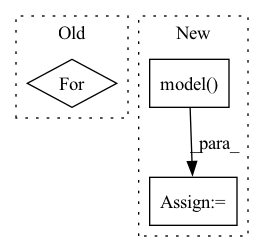

Pattern ID :1222
Before Change
// Text as sequence of sentencepiece ID"s.
context =[]
question = []
for i in inputs:
question.append(i["question"])
context.append(i["context"])
prediction_output = []After Change
prediction_output = []
for inp in inputs:
tokenized = self.tokenizer(inp["question"], inp["context"], return_tensors="jax", padding=True)
output = self.model(**tokenized)
answer_start_index = output.start_logits.argmax()
answer_end_index = output.end_logits.argmax()
predict_answer_tokens = inputs.input_ids[0, answer_start_index : answer_end_index + 1]
prediction_output.append({In pattern: SUPERPATTERN
Frequency: 5
Non-data size: 3
Instances Fragment ID: 6239468
Project Name: pair-code/lit
Commit Name: 91a22d65b7165cea1ad68dfffce0769ec9a2c966
Time: 2022-06-16
Author: 31214277+aryan1107@users.noreply.github.com
File Name: lit_nlp/examples/models/tydi.py
M Class Name: TydiModel
N Class Name: TydiModel
M Method Name: predict_minibatch(2)
N Method Name: predict_minibatch(2)
M Parent Class: lit_model.Model
N Parent Class: lit_model.Model
M File Name: lit_nlp/examples/models/tydi.py
N File Name: lit_nlp/examples/models/tydi.py
M Start Line: 134
M End Line: 156
N Start Line: 130
N End Line: 138
Before Change
expanded_logits = Perturbation.get_expanded_logits(logits, self.reg_params.n_samples)
inf_inputs = []
for i in inputs:
inf_inputs.append(Perturbation.perturb_tensor(i, self.reg_params.n_samples).float().cuda())
inf_output = self.model(inf_inputs)
inf_loss = torch.nn.functional.binary_cross_entropy_with_logits(inf_output, expanded_logits)After Change
inf_inputs.append(Perturbation.perturb_tensor(i, self.reg_params.n_samples).float().cuda())
inf_inputs_len.append(Perturbation.perturb_tensor(inputs[1][ind], self.reg_params.n_samples,False))
inf_output = self.model( [inf_inputs, inf_inputs_len], training=True)
inf_loss = torch.nn.functional.binary_cross_entropy_with_logits(inf_output, expanded_logits)
gradients = torch.autograd.grad(inf_loss, inf_inputs, create_graph=True)
grads = [Regularization.get_batch_norm(gradients[k], loss=inf_loss, Fragment ID: 6239466
Project Name: pliang279/multibench
Commit Name: 0e0c7a49dc117cdb06f01380158e60a7ab4e0040
Time: 2021-04-07
Author: ztwu_nil@zju.edu.cn
File Name: objective_functions/regularization.py
M Class Name: RegularizationLoss
N Class Name: RegularizationLoss
M Method Name: forward(3)
N Method Name: forward(3)
M Parent Class: torch.nn.Module
N Parent Class: torch.nn.Module
M File Name: objective_functions/regularization.py
N File Name: objective_functions/regularization.py
M Start Line: 228
M End Line: 243
N Start Line: 233
N End Line: 250
Before Change
r = self.model.receptive_field
y = x.new_empty(r + horizon)
y[:r] = x[-r:] // Copy last `see` observations
for h in range(r):
_, queues = self.model.forward_fast(y[h].view(1, 1, 1), queues)
for h in range(horizon):
p, queues = self.model.forward_fast(y[r + h - 1].view(1, 1, 1), queues)After Change
// print([q.shape for q in queues])
y[:r] = x[-r:] // Copy last `see` observations
_, outputs = self.model( y[:r].view(1, 1, -1), return_outputs=True)
queues = wave.create_fast_queues(self.model.wave.features, outputs)
print(queues[2][0, :10, -1])
// queues = wave.create_fast_queues( Fragment ID: 6239465
Project Name: cheind/autoregressive
Commit Name: 895fe952e9a4de2bbdbf27e3b05cf99fad426c07
Time: 2021-10-20
Author: cheind@profactor.at
File Name: autoregressive/models.py
M Class Name: FastGeneration
N Class Name: FastGeneration
M Method Name: predict(4)
N Method Name: predict(4)
M Parent Class:
N Parent Class:
M File Name: autoregressive/models.py
N File Name: autoregressive/models.py
M Start Line: 200
M End Line: 209
N Start Line: 197
N End Line: 219
Before Change
n = y[0].shape[0]
scores = self.model.evaluate(X, y, batch_size=n, verbose=0)
for metric, score in zip(streaming_metrics, scores):
metric.update(score, n)
for metric in streaming_metrics:
logs["val_" + metric.name] = metric.value
return logsAfter Change
// do scoring this way since model methods complain
// about non-matching input shapes due to multi-hot
for metric, streaming_metric in zip(self.model.metrics, streaming_metrics):
y_pred = self.model( X)
score = metric(y, y_pred)
streaming_metric.update(score, n)
for metric in streaming_metrics: Fragment ID: 6239464
Project Name: nvidia/nvtabular
Commit Name: 6b668bbd884073cbaf03837cbce5df0810d18a00
Time: 2020-11-03
Author: amacgunny@gmail.com
File Name: nvtabular/loader/tensorflow.py
M Class Name: KerasSequenceValidater
N Class Name: KerasSequenceValidater
M Method Name: on_epoch_end(3)
N Method Name: on_epoch_end(3)
M Parent Class: tf.keras.callbacks.Callback
N Parent Class: tf.keras.callbacks.Callback
M File Name: nvtabular/loader/tensorflow.py
N File Name: nvtabular/loader/tensorflow.py
M Start Line: 331
M End Line: 341
N Start Line: 365
N End Line: 379
Before Change
expanded_logits = Perturbation.get_expanded_logits(logits, self.reg_params.n_samples)
inf_inputs = []
for i in inputs:
inf_inputs.append(Perturbation.perturb_tensor(i, self.reg_params.n_samples).float().cuda())
inf_output = self.model(inf_inputs)
inf_loss = torch.nn.functional.binary_cross_entropy_with_logits(inf_output, expanded_logits)After Change
inf_inputs.append(Perturbation.perturb_tensor(i, self.reg_params.n_samples).float().cuda())
inf_inputs_len.append(Perturbation.perturb_tensor(inputs[1][ind], self.reg_params.n_samples,False))
inf_output = self.model( [inf_inputs, inf_inputs_len], training=True)
inf_loss = torch.nn.functional.binary_cross_entropy_with_logits(inf_output, expanded_logits)
gradients = torch.autograd.grad(inf_loss, inf_inputs, create_graph=True)
grads = [Regularization.get_batch_norm(gradients[k], loss=inf_loss, Fragment ID: 6239461
Project Name: pliang279/multibench
Commit Name: c54605f2e0f9be6777682e7598449cf2b1cd3898
Time: 2021-04-07
Author: ztwu_nil@zju.edu.cn
File Name: objective_functions/regularization.py
M Class Name: RegularizationLoss
N Class Name: RegularizationLoss
M Method Name: forward(3)
N Method Name: forward(3)
M Parent Class: torch.nn.Module
N Parent Class: torch.nn.Module
M File Name: objective_functions/regularization.py
N File Name: objective_functions/regularization.py
M Start Line: 228
M End Line: 243
N Start Line: 233
N End Line: 250